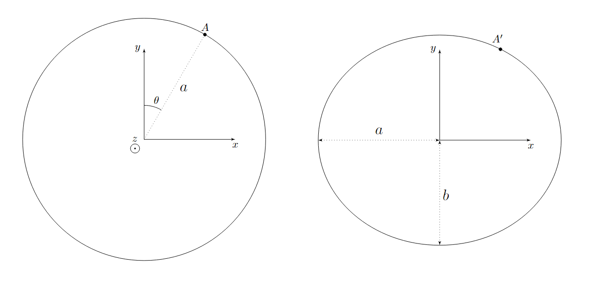
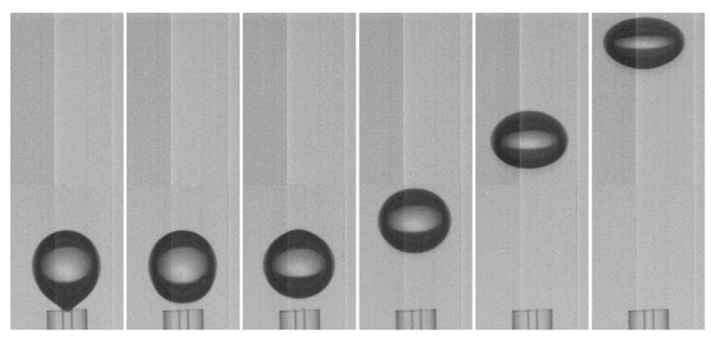
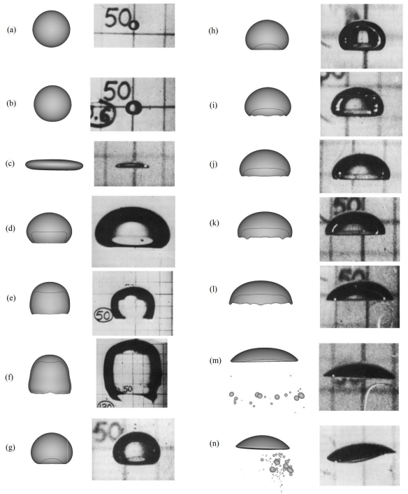
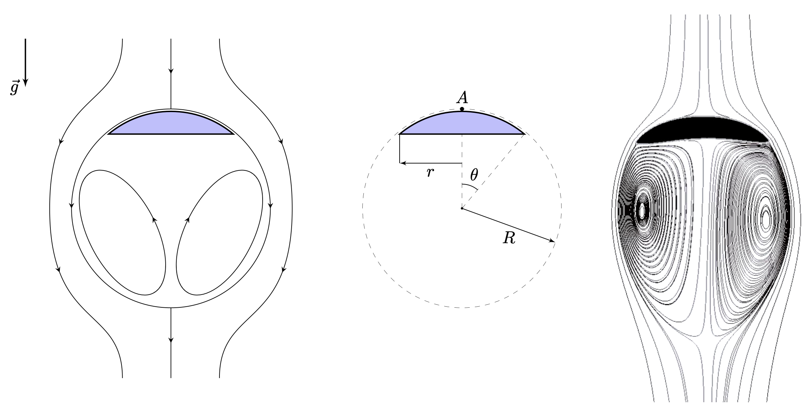

X25 (2025) — English translation
When observing air bubbles floating in a liquid, you will notice that their shape very much depends on the volume of air inside the bubbles and can be either close to spherical or resemble a thin disk. This problem is devoted to the study of the shapes of air bubbles floating in a liquid. When solving the problem, we will accept the following model of the phenomenon: unless otherwise indicated, all moving bodies have a shape slightly different from spherical; the compressibility and viscosity of the liquid can be neglected; the gravitational field in parts A and B can be neglected.
When observing air bubbles floating in a liquid, you will notice that their shape very much depends on the volume of air inside the bubbles and can be either close to spherical or resemble a thin disk. This problem is devoted to the study of the shapes of air bubbles floating in a liquid. When solving the problem, we will accept the following model of the phenomenon:
Let us consider a ball of radius $R$ moving with speed $\vec{v}_0$ in an infinite volume of incompressible fluid with density $\rho$ and zero viscosity. The ball sets the liquid in motion. Recall that the gravitational field can be neglected. The movement of the fluid is characterized by the quantity $\mu$, called the added mass. The following characteristics of a moving fluid are associated with the added mass: If a ball moves in a fluid with a speed $\vec{v}_0$, then the kinetic energy $E_k$ of the fluid surrounding the ball is determined by the expression: $$E_k=\cfrac{\mu v_0^2}{2}. $$ Если шар движется в жидкости со скоростью $\vec{v}_0$, то импульс $\vec{p}$ жидкости, окружающей шар, определяется выражением $$ \vec{p}=\mu\vec{v_0}. $$ Пусть $\ vec{r}$ — радиус-вектор, проведенный из центра шара в произвольную точку пространства, а $\vec{v}(\vec{r})$ — скорость соответствующего кусочка жидкости в лабораторной системе отсчёта. При решении задачи вам понадобится теорема Томсона, утверждающая, что если изначально неподвижную несжимаемую жидкость с нулевой вязкостью привести в движение, то циркуляция вектора скорости жидкости по любому замкнутому контуру, не пересекающему поверхности движущихся в жидкости тел, обращается в ноль, что можно записать следующим образом: $$\oint_l\vec{v}d\vec{l}=0{.} $$ В пунктах A1 - A9 будем решать задачу в в системе отсчёта, связанной с шаром. Скорость жидкости в этой системе отсчёта будем обозначать как $\v ec{v}_{\text{rel}}$.
Пусть $\vec{r}$ — радиус-вектор, проведенный из центра шара в произвольную точку пространства, а $\vec{v}(\vec{r})$ — скорость соответствующего кусочка жидкости в лабораторной системе отсчёта. При решении задачи вам понадобится теорема Томсона, утверждающая, что если изначально неподвижную несжимаемую жидкость с нулевой вязкостью привести в движение, то циркуляция вектора скорости жидкости по любому замкнутому контуру, не пересекающему поверхности движущихся в жидкости тел, обращается в ноль, что можно записать следующим образом: $$\oint_l\vec{v}d\vec{l}=0{.} $$ В пунктах A1 - A9 будем решать задачу в в системе отсчёта, связанной с шаром. Скорость жидкости в этой системе отсчёта будем обозначать как $\vec{v}_{\text{rel}}$.
Note: the flow of the relative fluid velocity vector through a closed surface is the quantity $\Phi$, determined by the expression: \begin{equation*} \Phi=\oint_S\vec{v}_\text{rel}\bigl(\vec{r}\bigr)d\vec{S}{.} \end{equation*}
Since the ball moves in the fluid at a constant speed, in the ball's frame of reference the motion of the fluid is stationary. This allows us to obtain the pressure distribution on the surface of the ball.
Let $\theta$ be the angle between the radius vector $\vec{r}$ and the speed $\vec{v_0}$.
Let's return to the laboratory frame of reference. In the laboratory reference frame, the fluid velocity at a point with radius vector $\vec{r}$ is equal to $\vec{v}(\vec{r})$
If you were unable to solve the previous point, you can continue to count $\mu = \frac{4}{3}\pi R^3\rho$.
Since the bubble is not a solid body, it will be deformed as a result of movement. In the future, consider its deformation to be small. Let us consider the movement of a bubble with a surface tension coefficient $\sigma$ with a speed $v_0$. Consider all expressions obtained in the previous paragraphs to be applicable. The pressure inside the bubble is the same everywhere and is equal to $p_{in}$.
Note: the curvature $K$ of a surface is the sum of the inverse principal radii of curvature: $$ K=\frac{1}{R_1}+\frac{1}{R_2}$$
Она связана с Лапласовым давлением как:
$$\Delta p = \sigma K$$
Let us consider an ellipsoid obtained from an ellipse with a semi-major axis $a$ and a semi-minor axis $b$ by rotation about the minor axis. We denote the rotation axis as $y$. This figure can be obtained by compressing a sphere of radius $a$ along the axis $y$ with a coefficient $k$, where $k = b/a$. Let us find the curvature of the surface of the resulting figure at an arbitrary point $A'$, which before compression corresponded to the point $A$ and the angle $\theta$, measured from the axis $y$.

It can be shown that in the $(x, y)$ plane the radius of curvature of the ellipsoid is equal to: $$R_1(\theta)= \frac{a}{k} \cdot (\cos^2{\theta} + k^2 \sin^2{\theta})^\frac{3}{2},$$ а в плоскости, содержащей нормаль к эллипсоиду в точке $A'$ и перпендикулярной плоскости $(x, y)$, радиус кривизны эллипсоида равен: $$R_2(\theta) = \frac{a}{k} \sqrt{\cos^2{\theta} + k^2 \sin^2{\theta}}. $$
Так как $K(\theta)$ в части А было выведено в предположении, что капля является сферой, то отклонения от сферы должны быть маленькими. Это означает, что $k = 1-\varepsilon$, где $\varepsilon \ll1$. Также считайте, что $a \approx R$, где $R$ is the radius of the bubble we used in Part A.

In real life, the free fall acceleration $g$ will create a vertical pressure gradient in the vessel, as a result of which the Archimedes force $F_A$ will appear, accelerating the bubble upward. Initially, the bubble is spherical, but during acceleration, according to the theory from the previous paragraph, it begins to flatten. Newton's second law for a nearly spherical bubble would look like this: $$m \vec{a} = m\vec{g} + \vec{F_A} + \vec{F_\mu} + \vec{F_{\text{тр}}},$$где $m$ - масса пузыря, которой можно пренебречь, $\vec{F_A}$ – сила Архимеда, $\vec{F_\mu}$ – сила, действующая со стороны воды на пузырь, связанная с присоединённой массой воды, $\vec{F_\text{tr}}$ – сила трения, возникающая из-за эффектов турбулентности. В нашей модели $\vec{F_\text{tr}}$ хорошо описывается формулой $\vec{F_\text{tr}} = -\pi R^2 \rho v \vec{v}$, где $\vec{v}$ is the bubble speed. The speed of the bubble is initially zero.
In large-volume bubbles, the force of surface tension is weaker than in small ones, so their shape when they reach a constant speed is far from spherical.

In general, the shape of the bubbles shown in the figure above is simulated using a computer. However, in the previous parts we were able to study a shape close to spherical: these are the bubbles $a$ and $b$. In this part we will study the model applicable to bubbles $m$ and $n$. Let us describe the bubble as a segment of a sphere with base radius $r$. The radius of curvature of the bubble, that is, the radius of the sphere, is constant and equal to $R$. Photographs $m$ and $n$ show that the bubbles are almost flat, which means we can assume that $r \ll R$. We will characterize a point on the bubble surface by a small angle $\theta$, measured from the center of curvature. The air pressure inside the bubble is $p_{in}$.

The water flow lines are schematically indicated in the figure. We will assume that the distribution of fluid velocities $\vec{v}_{\text{отн}}(\vec{r})$ over the bubble is exactly the same as in the case of motion of a solid ball of radius $R$ with speed $v_0$. Gravity acceleration $g$.
Let the bubble float in a deep pond. The pressure on the surface of the reservoir is equal to atmospheric pressure $p_0$. The distance from the surface of the reservoir to the point $A$ is $h \gg R$.
Source: https://pho.rs/p/4196